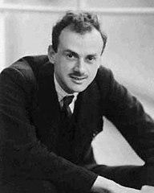
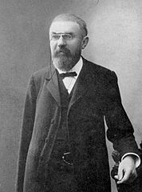
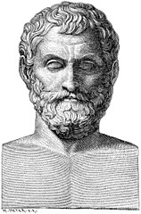
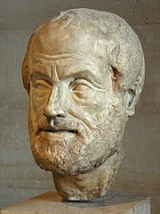
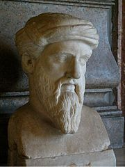

MAT-KON
O Matematyce słów kilka
Matematyka – nauka dostarczająca narzędzi do otrzymywania ścisłych wniosków z przyjętych założeń, zatem dotycząca prawidłowości rozumowania. Ponieważ ścisłe założenia mogą dotyczyć najróżniejszych dziedzin myśli ludzkiej, a muszą być czynione w naukach ścisłych, technice, a nawet w naukach humanistycznych, zakres matematyki jest szeroki i stale się powiększa.
Paul Dirac stwierdził: „Matematyka jest narzędziem stworzonym specjalnie do wszelkich abstrakcyjnych koncepcji i nie ma ograniczeń dla jej potęgi w tym zakresie”

Henri Poincaré określił matematykę jako „sztukę nadawania takich samych nazw różnym rzeczom”. Oddaje to jedną z piękniejszych cech matematyki, zdolnej uogólniać właściwości i czynić analogie między bardzo odległymi i wydawałoby się mało ze sobą związanymi obiektami.

Historycznie...
Historia matematyki jest prawdopodobnie równie stara jak ludzkość, a w XXI wieku dalej jest żywa, splatając się z dziejami innych nauk, technologii oraz pozostałych obszarów kultury.
W prehistorii uformowano podstawowe pojęcia arytmetyczne i geometryczne. Starożytność i średniowiecze znacznie rozwinęły te obszary, doprowadzając do powstania trzeciej dziedziny: algebry. Sformułowano też wtedy podstawy logiki i filozofii matematyki, które wywarły potem wpływ na ewolucję samej królowej nauk. Jej dzieje starożytne i średniowieczne składają się z okresów gwałtownego postępu oddzielonych całymi stuleciami stagnacji, co skończyło się w renesansie. XVI-wieczne Włochy rozpoczęły nieprzerwany rozwój tej nauki, który trwa po dziś dzień. Czasy nowożytne to rozwój trzech dotychczasowych dziedzin, ich redefinicja i pojawienie się nowych dyscyplin jak kombinatoryka, probabilistyka i analiza, a w XIX wieku także topologia, teoria mnogości i logika matematyczna.

Grecki uczony: filozof, matematyk i astronom okresu przedsokratejskiego, przedstawiciel jońskiej filozofii przyrody. Powszechnie uznawany za pierwszego filozofa i matematyka cywilizacji zachodniej oraz za inicjatora badań nad przyrodą jako nauki. Należy też do kanonu siedmiu mędrców. Talesa postrzega się jako pierwszego filozofa głównie dlatego, że zainicjował wyjaśnianie rzeczywistości przez odwoływanie się do natury i rozumu bardziej niż do mitologii i tradycji – Grecy widzieli w nim jednak raczej mędrca niż filozofa.

Filozof, jeden z trzech – obok Sokratesa i Platona – najsławniejszych filozofów starożytnej Grecji. Nazywany też Stagirytą (od miejsca urodzenia) lub po prostu Filozofem (w tekstach średniowiecznych i nowożytnych).
Był twórcą odmiennego od platonizmu i równie spójnego systemu filozoficznego, który bardzo silnie wpłynął na filozofię i naukę europejską. Zapoczątkował nurt filozoficzny nazywany arystotelizmem, który miał wiele postaci w różnych epokach. Chrześcijańska odmiana arystotelizmu zwana tomizmem powstała w XIII wieku i jest do dziś uważana za oficjalną filozofię Kościoła katolickiego. Założyciel szkoły filozoficznej w ogrodach Lykeionu (od nazwy sąsiadującej z nimi świątyni Apollina Likejosa) – stąd wzięło się później słowo „liceum”.
Oprócz filozofii Arystoteles położył ogromne zasługi w rozwoju logiki i nauk przyrodniczych, szczególnie astronomii, fizyki i biologii. Zbyt rygorystyczna akceptacja tych teorii przez przedstawicieli filozofii scholastycznej stała się jedną z przyczyn opóźnienia rozwoju tych nauk w Europie[potrzebny przypis]. Choć ostatecznie wiele jego teorii naukowych okazało się błędnych, to znacząco przyczyniły się one do poszukiwania nowych hipotez.

Grecki matematyk, filozof, mistyk kojarzony ze słynnym twierdzeniem matematycznym nazwanym jego imieniem. Według większości opisów Pitagoras żył około 80 lat, chociaż relacja anonimowego autora twierdzi, iż żył on aż 104 lata. Według jednej z wersji zmarł w Metaponcie w domu zapaśnika Milona, ocalony z pogromu Krotony, zaś innej – rewolty tej nie przeżył. Według wielu źródeł jego żoną była Teano, z którą miał dwóch synów: Telangesa i Menezarcha i dwie córki: Damo i Myię.